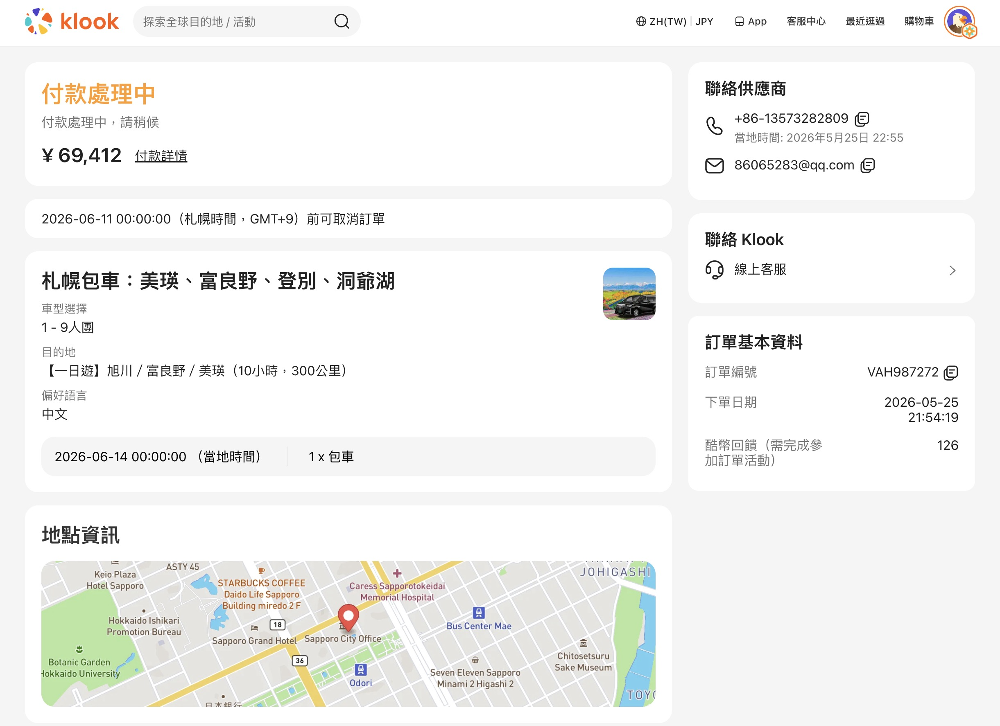

🎫 開口票行程：新千歲 (CTS) 入境 → 函館 (HKD) 出境，從北往南一路玩，不走回頭路！
去程：長榮航空 BR116（訂位 EQBHRC）｜回程：星宇航空 JX861（訂位 EQM6MS）
去程：長榮航空 BR116（訂位 EQBHRC）｜回程：星宇航空 JX861（訂位 EQM6MS）
D1
6月10日（三）
✈️ 新千歲入境 → 抵達札幌
🗓 今日活動
🚆 交通
JR 快速 Airport 新千歲→札幌
16:30→17:08｜NT$478/人
✅ KKday 已訂｜#26KK279750466 & #26KK274950086
16:30→17:08｜NT$478/人
✅ KKday 已訂｜#26KK279750466 & #26KK274950086
🏨 住宿
札幌格蘭大酒店（3晚）✅
確認號：6663114862｜含早餐
確認號：6663114862｜含早餐
📝 備註
D2
6月11日（四）
🏙 札幌城市深度遊
🗓 今日活動
🍽 必吃
湯咖哩・北海道軟雪糕
二条市場海鮮丼（早餐）
二条市場海鮮丼（早餐）
🍤 晚餐訂位（已確認）
天ぷら成 Tempura Masa
20:30｜8位｜¥31,000/人
中央区南4条西4丁目 松岡ビル1F
著裝：男士商務休閒｜禁噴香水｜準時入座
via TABLEALL（額外飲品現場另付）
20:30｜8位｜¥31,000/人
中央区南4条西4丁目 松岡ビル1F
著裝：男士商務休閒｜禁噴香水｜準時入座
via TABLEALL（額外飲品現場另付）
🏨 住宿
札幌市區（同上）
📝 備註
D3
6月12日（五）
⚓ 小樽一日遊
🗓 今日活動
🚆 交通
JR 函館本線
札幌↔小樽 NT$165×2
札幌↔小樽 NT$165×2
🏨 住宿
札幌市區（同上）
📝 備註
D4
6月13日（六）
🌊 札幌 → 洞爺湖
🗓 今日活動
🌋 洞爺湖是世界地質公園認定地區，有珠山是活火山（最近一次噴發 2000 年），搭乘纜車可近距離觀察火口遺跡，是北海道最獨特的自然體驗之一！
🚆 交通
JR 北斗號 札幌→洞爺（約 1.5h）
🎫 JR Pass 啟用（Day 1）
🎫 JR Pass 啟用（Day 1）
🍽 晚餐
レストラン望羊蹄（ぼうようてい）
17:00〜20:30｜約¥2,500〜3,000/人
洞爺湖温泉36-12｜☎ 0142-75-2311
漢堡排・ポークカツレツ・ナポリタン
17:00〜20:30｜約¥2,500〜3,000/人
洞爺湖温泉36-12｜☎ 0142-75-2311
漢堡排・ポークカツレツ・ナポリタン
🏨 住宿
洞爺湖萬世閣酒店（2晚）✅
確認碼：5876310951｜Booking.com
確認碼：5876310951｜Booking.com
📝 備註
D5
6月14日（日）
🌋 洞爺湖 火山地形深度遊
🗓 今日活動
🎆 洞爺湖煙火祭（4/28～10/31）是日本持續最長的煙火活動，每晚 20:45 於湖上施放約 20 分鐘，從旅館窗戶即可欣賞，完全免費！
🚌 交通
洞爺湖地區巴士 ／ 步行
（旅館至昭和新山約 15 分巴士）
（旅館至昭和新山約 15 分巴士）
🏨 住宿
洞爺湖萬世閣酒店（同上）✅
📝 備註
D6
6月15日（一）
♨️ 洞爺湖 → 登別溫泉
🗓 今日活動
🚆 交通
洞爺→登別（JR 北斗，約 30 分・直達）
🎫 JR Pass（Day 3）
🎫 JR Pass（Day 3）
🏨 住宿
第一滝本館（2晚）✅
確認號：5130429785｜含早餐
確認號：5130429785｜含早餐
📝 備註
D7
6月16日（二）
♨️ 登別溫泉深度體驗
🗓 今日活動
💡 登別有9種泉質（硫磺泉、食鹽泉等），是全日本泉質最豐富的溫泉地之一，長輩們泡湯特別適合！
🍽 餐食
旅館含早餐
（北海道豐盛早餐）
（北海道豐盛早餐）
🏨 住宿
第一滝本館（同上）✅
📝 備註
D8
6月17日（三）
🏰 登別 → 函館（直達）
🗓 今日活動
✅ 跳過洞爺湖，直達函館！提早抵達讓下午有充裕時間遊覽元町，長輩不趕路。
🚆 交通
JR スーパー北斗 登別→函館 約 2.5h
🎫 JR Pass（Day 5）・補票 ¥370/人
🎫 JR Pass（Day 5）・補票 ¥370/人
🏨 住宿
望楼NOGUCHI函館（2晚）✅
確認號：5535567627 & 6094131150｜含早晚餐・湯の川溫泉
確認號：5535567627 & 6094131150｜含早晚餐・湯の川溫泉
📝 備註
D9
6月18日（四）
🌿 大沼國定公園 ＋ 函館城市深度遊
🍽 餐食：早＝飯店含（望樓早餐）｜ 午＝函館朝市海鮮丼（自費）｜ 晚＝飯店含（望樓晚餐）
🗓 今日行程
🌿 大沼國定公園全程平坦、無障礙，湖畔散步輕鬆寫意。大沼糰子是函館著名名產，記得買！JR 去程 ~30 分，8:00 出發可銜接 8:30 開始遊覽。
🛍 必買
大沼糰子・函館朝市鮮魚・醃海鮮
幸運小丑漢堡（限定口味）
幸運小丑漢堡（限定口味）
🏨 住宿
望樓飯店（望楼NOGUCHI函館）
含早餐 ＋ 晚餐 ✅
含早餐 ＋ 晚餐 ✅
📝 備註
D10
6月19日（五）
✈️ 函館早餐・最後採購 → 函館機場出發
🍽 餐食：早＝飯店含（最後一頓望樓早餐）｜ 午＝市區自費（朝市或附近小店）｜ 晚＝飛機餐（JX861）
🗓 今日行程
⚠️ 時間關鍵節點：採購 14:30 截止 → 14:30 退房 → 15:15 搭巴士 → 15:45 抵機場 → 17:45 JX861 起飛。請務必預留充裕時間！
🚨 護照提醒：莊淑卿（護照 6/30 到期）、莊靜芬（護照 7/7 到期）請確認護照換證狀況！
📝 備註
🗺 開口票旅遊路線（CTS 入 → HKD 出）
- ✈️D1 ── 新千歲機場 (CTS) 入境 → 札幌長榮 BR116 10:10→15:00 ｜ 去程訂位 EQBHRC ｜ JR 快速 Airport 37分
- 🏙D1–D3 ── 札幌（3晚）+ 小樽時計台・神宮・大通公園・藻岩山 ｜ 小樽運河・三角市場
- 🌊D4–D5 ── 洞爺湖（2晚）有珠山ロープウェイ・昭和新山・遊覽船・湖畔散步・每晚煙火
- ♨️D6–D7 ── 洞爺湖 → 登別溫泉（2晚）JR 直達洞爺→登別約 30分 ｜ 地獄谷・熊牧場・9種泉質溫泉
- 🏰D8–D9 ── 函館（2晚）元町夜景・朝市・五稜郭・市電・金森倉庫・大沼國定公園（D9）
- ✈️D10 ── 函館機場 (HKD) 出境返台星宇航空 JX861 17:45→20:55 ｜ 回程訂位 EQM6MS
✅ 開口票優勢：由北（新千歲）入、向南（函館）出，一路順向遊覽，省去折返交通，行程更流暢！
🚆 JR 票卷策略
✅ KLOOK 已訂購・2026/5/24
北海道 JR Pass 鐵路周遊券・5天
8 位成人・NT$4,347/人・啟用日：6/13（六）
付款金額
NT$ 36,515
含 No-show Refund NT$1,739
訂單編號
YFS021264
代轉號碼
T51877558
每人票價
NT$ 4,347
換票有效期
90天內兌換
| 日期 | 路線 | 票種 | 費用/人 |
|---|---|---|---|
| 6/10 | 新千歲 → 札幌（快速 Airport）16:30→17:08 #26KK279750466 & #26KK274950086 |
✅ KKday | NT$3,820 8人合計 |
| 6/12 | 札幌 ⇌ 小樽（往返） | 個別買 | ¥750 × 2 |
| 6/13 Day 1 | 札幌 → 洞爺（JR 北斗號） | 🎫 Pass | 含 |
| 6/15 Day 3 | 洞爺 → 登別（JR 北斗，直達約 30分） | 🎫 Pass | 含 |
| 6/17 Day 5 | 登別 → 函館（スーパー北斗） | 🎫 Pass | 含 |
⚠️ 新函館北斗→函館（道南いさりび鉄道）不含在 Pass，需補票 ¥370/人
🛒 Klook 台灣預購 → 抵日新千歲機場換票 → 6/13 再啟用（勿提早啟用）
🌡 6月北海道氣候
⛅
札幌
17°C / 10°C
🌤
富良野
21°C / 9°C
♨️
登別
16°C / 10°C
🌊
函館
19°C / 12°C
👕 日夜溫差最大可達 10°C，請為長輩們準備薄外套。6月雨水不多，但建議帶折疊傘備用。
💰 費用總覽（每人 / NT$）
以新台幣計算｜匯率：1 JPY ≈ NT$0.22
| 項目 | 每人（NT$） | 8人合計（NT$） | 備註 |
|---|---|---|---|
| ✈️ 去程 BR116（長榮，已訂） | ~13,493 | ~107,946 | 易遊網 EQBHRC ｜ TPE→CTS |
| ✈️ 回程 JX861（星宇，已訂） | ~11,128 | ~89,024 | EQM6MS ｜ HKD→TPE |
| 🏨 住宿 9晚（已訂） | ~41,894 | ~335,153 | 札幌NT$85,309＋洞爺湖NT$70,223＋登別NT$64,926＋函館NT$114,695｜含溫泉旅館・函館含早晚餐 |
| 🚆 JR Pass（已訂✅） | 4,347 | 36,515 | Klook YFS021264・8人實付總額（含 No-show Refund NT$1,739） |
| 🚆 JR 機場快線（新千歲→札幌）✅ 已付 | 478 | 3,820 | KKday 已訂｜#26KK279750466（NT$1,884）+ #26KK274950086（NT$1,936） |
| 🚆 JR 個別車票（小樽往返・道南補票）估 | ~411 | ~3,288 | 小樽往返¥1,500＋新函館北斗→函館補票¥370（/人）・抵日現場購 |
| 🚌 機場巴士 估 | ~97 | ~776 | 函館機場利木津巴士 |
| 🍤 Tempura Masa omakase 晚餐 ✅ 已付 | 6,125 | 49,000 | 6/11 D2｜¥31,000/人×8（含訂位費）via TABLEALL｜NT$49,000（已確認） |
| 🍽 其他餐飲 估 | ~3,500 | ~28,000 | 海鮮丼・湯咖哩・拉麵等（登別・函館旅館含早晚餐，其餘自費） |
| 🎟 景點門票 估 | ~2,200 | ~17,600 | 有珠山纜車、遊覽船、熊牧場、五稜郭等 |
| 📱 SIM 卡 估 | ~660 | ~5,280 | 10天吃到飽 SIM |
| 合計（含機票） | ~NT$84,333 | ~NT$674,664 |
✈️ 去程 BR116（長榮，已訂）
NT$13,493
8人 NT$107,946
易遊網 EQBHRC｜TPE→CTS
✈️ 回程 JX861（星宇，已訂）
NT$11,128
8人 NT$89,024
EQM6MS｜HKD→TPE
🏨 住宿 9晚（已訂）
NT$41,894
8人 NT$335,153
札幌NT$85,309＋洞爺湖NT$70,223＋登別NT$64,926＋函館NT$114,695
🚆 JR Pass（已訂✅）
NT$4,347
8人 NT$36,515
Klook YFS021264・含 No-show Refund NT$1,739
🚆 JR 機場快線 ✅已付
NT$478
8人 NT$3,820
KKday｜#26KK279750466（NT$1,884）+ #26KK274950086（NT$1,936）
🚆 JR 個別車票（估）
~NT$411
8人 ~NT$3,288
小樽往返¥1,500＋道南補票¥370（/人）・現場購
🚌 機場巴士（估）
~NT$97
8人 ~NT$776
函館機場利木津巴士
🍤 Tempura Masa ✅已付
NT$6,125
8人 NT$49,000
6/11 D2｜¥31,000/人×8 via TABLEALL｜NT$49,000
🍽 其他餐飲（估）
~NT$3,500
8人 ~NT$28,000
海鮮丼・湯咖哩・拉麵等（旅館已含部分早晚餐）
🎟 景點門票（估）
~NT$2,200
8人 ~NT$17,600
有珠山纜車・遊覽船・熊牧場・五稜郭等
📱 SIM 卡（估）
~NT$660
8人 ~NT$5,280
10天吃到飽 SIM・出發前台灣購
💰 合計（含機票）
~NT$84,333
8人 ~NT$674,664
✅ 已確認付款：機票 NT$196,970 ＋ 住宿 NT$335,153 ＋ JR Pass NT$36,515 ＋ 機場快線 NT$3,820 ＋ Tempura Masa NT$49,000 = NT$621,458
OMO7旭川退款 JPY 178,272・包車 VAH987272 退款 ¥69,412 處理中
OMO7旭川退款 JPY 178,272・包車 VAH987272 退款 ¥69,412 處理中
估 其餘為預估，實際依當地消費調整
🚨 緊急待辦（出發前必須完成）
📋 訂房 / 訂票
🧳 行李清單
🧾 Klook 訂單收據
PDF
北海道 JR Pass 鐵路周遊券・5天
訂單 YFS021264・代轉 T51877558・NT$36,515
KKday
JR 快速 Airport 機場快線・新千歲→札幌
#26KK279750466 & #26KK274950086・NT$3,820・已處理
已取消
旭川包車：富良野 / 美瑛 一日遊
訂單 VAH987272 已取消・退款 ¥69,412 處理中

🎫 開口票交通規劃重點
✅ JR 北海道 5日 Pass（Klook YFS021264 已訂，6/13 啟用）
D4 Day 1：札幌→洞爺 ／ D6 Day 3：洞爺→登別（直達約 30 分）／ D8 Day 5：登別→函館
D1（新千歲→札幌）和小樽來回不需用 Pass，刷 ICOCA/SUICA 即可。
D4 Day 1：札幌→洞爺 ／ D6 Day 3：洞爺→登別（直達約 30 分）／ D8 Day 5：登別→函館
D1（新千歲→札幌）和小樽來回不需用 Pass，刷 ICOCA/SUICA 即可。
♨️ 溫泉禮儀（登別 D6-D7）
入浴前必須淋浴・長髮須綁起・不可穿泳衣・心臟不適者避免浸泡超過 15 分鐘
有刺青者通常謝絕，建議事先確認飯店政策。登別旅館晚上 10 點前開放大浴場。
有刺青者通常謝絕，建議事先確認飯店政策。登別旅館晚上 10 點前開放大浴場。
👴👵 長輩友善提醒
本團有多位長輩，建議注意：每日步行量控制在 1~1.5 萬步以內 ／ 登別和函館景點交通便利，適合長輩 ／
洞爺湖遊覽船和有珠山纜車對長輩友善，步伐輕鬆 ／ 函館朝市 6:00 開門，早起對長輩是難事，可晚一點去 ／
大沼國定公園湖畔步道平坦無障礙，非常適合長輩漫步
夜次 1–3 ｜ 6/10（三）～ 6/13（六）退房
札幌格蘭大酒店
📍 札幌市中央區
等級★★★★
房型雙人房（Standard）
間數 × 夜數4 間 × 3 晚
每晚費用／間NT$ 7,109
早餐✅ 含早餐
實付總額NT$ 85,309
收費日期6/5
🔑 Check-in
15:00
🚪 Check-out
11:00
確認號：6663114862
📞 +81-11-261-3311
✅ Booking.com 已確認｜PIN: 6396｜入住 6/10・退房 6/13
🌐 官方網站 grand1934.com
夜次 4–5 ｜ 6/13（六）～ 6/15（一）退房
洞爺湖萬世閣酒店
📍 洞爺湖溫泉
等級★★★★
間數 × 夜數4 間 × 2 晚
每晚費用／間NT$ 8,777
早餐✅ 含早餐
實付總額NT$ 70,223
收費日期已收費
🔑 Check-in
15:00
🚪 Check-out
11:00
確認碼：5876310951
📱 PIN：5112 ｜ Booking.com
✅ Booking.com 已確認｜洞爺湖湖畔景觀・溫泉旅館・每晚煙火
🌐 官方網站 toyamanseikaku.jp
夜次 6–7 ｜ 6/15（一）～ 6/17（三）退房
第一滝本館
📍 登別溫泉
等級★★★★★
房型溫泉旅館
間數 × 夜數4 間 × 2 晚
每晚費用／間NT$ 8,116
早餐✅ 含早餐
實付總額NT$ 64,926
收費日期6/5
🔑 Check-in
14:00
🚪 Check-out
10:00
確認號：5130429785
📞 +81-143-84-2111
✅ Booking.com 已確認｜PIN: 9522
🌐 官方網站 takimotokan.co.jp
夜次 8–9 ｜ 6/17（三）～ 6/19（五）退房
望楼 NOGUCHI 函館
📍 函館・湯の川溫泉
等級★★★★★
房型和洋套房・溫泉浴池（私有湯）
間數 × 夜數4 間 × 2 晚（2低樓層 ＋ 2高樓層）
早餐✅ 含早晚餐
實付總額NT$ 114,695
└ 5535567627（低樓層×2）NT$ 57,921（JPY 294,344）
└ 6094131150（高樓層×2）NT$ 56,774（JPY 288,512）
🔑 Check-in
15:00
🚪 Check-out
11:00
確認號：5535567627｜PIN: 7369
確認號：6094131150｜PIN: 1995
📞 +81-138-57-8585
✅ Booking.com 已確認（兩筆訂單）
🌐 官方網站 bourou-hakodate.com
🗺️ 行程地區總覽：新千歲入境 → 札幌・小樽 → 洞爺湖（火山地形）→ 登別溫泉 → 函館・大沼，一路向南玩遍北海道，共 5 大地區。
D1–D3
6/10–6/12
🏙 札幌
新千歲機場入境・市區觀光 3 晚｜札幌格蘭大酒店
✈️ 新千歲機場 (CTS)
🕐 時計台
🌿 北海道神宮・圓山公園
🌳 大通公園
🛍 狸小路
🌃 藻岩山纜車
🏨 札幌格蘭大酒店
D2
6/11 20:30
✅ 已訂位
🍤 天ぷら成（Tempura Masa）
札幌 omakase 天婦羅｜中央区南4条西4丁目 松岡ビル1F｜via TABLEALL
📅 日期：2026/6/11（四）
🕗 時間：20:30（準時入座）
👥 人數：8 位
💴 費用：¥31,000/人 × 8 = ¥248,000
🍽 課程：Tempura Masa omakase course
👔 著裝：男士商務休閒裝
🚫 注意：禁止噴香水
⚠️ NO SHOW：遲到 30 分鐘視為放棄，收費 100%
額外飲品請現場另付 ｜ 取消政策：14天前可退100%（訂位費 ¥8,000/人 不退）
🍤 天ぷら成 Tempura Masa
📍 南4条西4丁目 松岡ビル1F
🌆 薄野エリア（Susukino）
🎟 via TABLEALL
D3
6/12 往返
⚓ 小樽
札幌出發日歸・JR 約 32 分
⚓ 小樽運河
🦐 三角市場
🍫 LeTAO・北菓楼・六花亭
🔭 天狗山纜車
🏛 歷史倉庫街
D4–D5
6/13–6/14
🌊 洞爺湖萬世閣
🌊 洞爺湖
洞爺湖萬世閣酒店 2晚・有珠山・昭和新山・遊覽船
🌋 有珠山ロープウェイ
🌋 昭和新山
🐻 昭和新山熊牧場
🚢 洞爺湖遊覽船
♨️ 洞爺湖溫泉街
🎆 每晚煙火（20:45）
🏨 洞爺湖萬世閣酒店
D4
6/13 晚餐 17:00
🍽 レストラン望羊蹄（ぼうようてい）
1946年創業 昭和老舗洋食｜洞爺湖温泉36-12｜約¥2,500〜3,000/人
🕔 午餐：11:00〜15:30（L.O. 14:30）
🕔 晚餐：17:00〜20:30（L.O. 19:30）
📵 定休：週三公休
📞 電話：0142-75-2311
💴 預算：¥2,500〜3,000/人
💳 付款：信用卡・QR碼 OK
🍔 招牌：鐵板漢堡排（デミグラスソース）・ポークカツレツ・ナポリタン・ホタテグラタン
木造小屋風コテージ空間，洞爺湖湖畔懷舊氛圍，台灣旅客好評
木造小屋風コテージ空間，洞爺湖湖畔懷舊氛圍，台灣旅客好評
🍽 レストラン望羊蹄
📍 洞爺湖温泉36-12
🏛 1946年創業
🍔 昭和老舗洋食
D6–D7
6/15–6/16
♨️ 登別溫泉
第一滝本館 2晚・9種泉質・地獄谷
🌋 地獄谷
💧 大湯沼・奧の湯
🐻 登別熊牧場
🎭 閻魔堂
♨️ 第一滝本館
D8–D10
6/17–6/19
🏰 函館
望楼NOGUCHI函館 2晚（含早晚餐）・湯の川溫泉・HKD 出境
🌃 函館山夜景（日本三大夜景）
⛪ 元町西洋建築群
⭐ 五稜郭・五稜郭塔
🏛 舊英國領事館
🦐 函館朝市
🍔 幸運小丑漢堡
🏗 金森紅磚倉庫
♨️ 湯の川溫泉
✈️ 函館機場 (HKD)
D9
6/18 往返
🌿 大沼國定公園
函館出發 JR 約 30 分・全程平坦無障礙・適合長輩
🌊 大沼湖・小沼湖
🏔 駒ヶ岳
🍡 大沼糰子（名產）
🚶 湖畔散步道（無障礙）
🚂 大沼公園站（JR 函館本線）